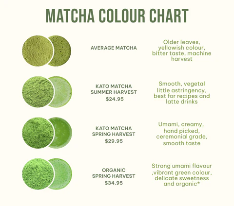
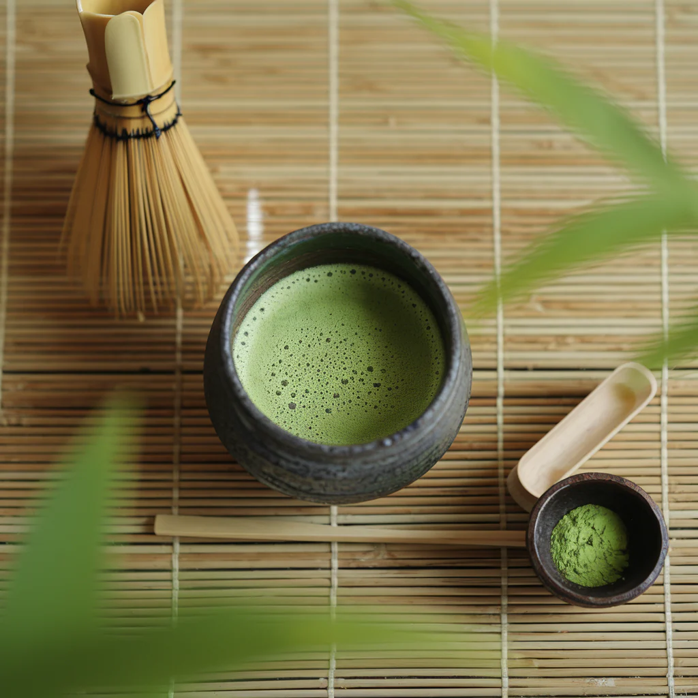

Flavor Profiles
Matcha offers one of the most layered and distinctive flavor experiences of any tea. Its taste is shaped by shade-growing, cultivar selection, and processing methods — resulting in a drink that balances several key flavor dimensions.

Umami
Umami is the defining taste of high-quality matcha. Shade-growing prevents theanine — the amino acid responsible for umami — from converting into tannins. The result is a rich, savory depth that lingers on the palate. Matcha contains roughly twice the amino acids of regular sencha green tea, with theanine, succinic acid, gallic acid, and theogallin as the primary umami contributors.
Sweetness
Good matcha carries a natural sweetness that emerges from its high amino acid content. This sweetness is subtle and vegetal, not sugary — more akin to the gentle sweetness of steamed greens or fresh seaweed. Higher-grade ceremonial matcha tends to be noticeably sweeter, while lower grades lean more toward bitterness.

Bitterness
Some degree of bitterness is natural in all green tea, caused by catechins and caffeine. In matcha, shade-growing reduces catechin levels, keeping bitterness restrained in premium grades. Lower-grade matcha or improperly prepared matcha (using water that is too hot) will taste more bitter. Historically, Tang dynasty tea connoisseurs prized the quality of being "bitter when sipped and sweet when swallowed."
Astringency
Astringency — the dry, puckering sensation — comes from tannins in the tea leaves. Shade cultivation suppresses the conversion of theanine into tannins, which is why high-grade matcha has a smooth mouthfeel rather than a harsh bite. The preparation method also matters: koicha (thick tea) is stirred gently rather than whisked, producing a velvety texture with minimal astringency.
Creaminess
Premium matcha has a naturally creamy, almost buttery texture. When whisked properly, the fine powder (particle size around 10–20 microns) suspends evenly in water and creates a smooth, full-bodied drink. The high chlorophyll and amino acid content contribute to this rich mouthfeel, which is why matcha pairs so well with milk in lattes and with cream in desserts.
Complexity
What sets matcha apart from other teas is the way all these flavors coexist and evolve. A single sip can shift from an initial marine sweetness, through a savory umami middle, to a clean, slightly bitter finish. The unique aroma — known as ooikou (覆い香), reminiscent of green laver — adds another dimension, driven by the tea's dimethyl sulfide content. The interplay of bright green color, rich aroma, and layered taste makes matcha one of the most complex beverages in the world.